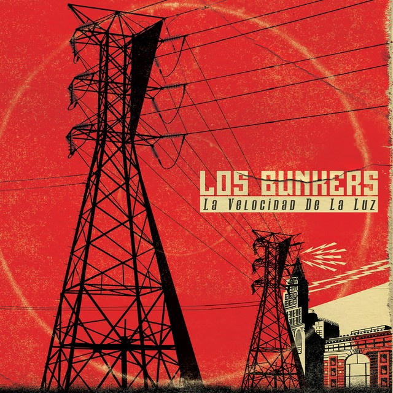
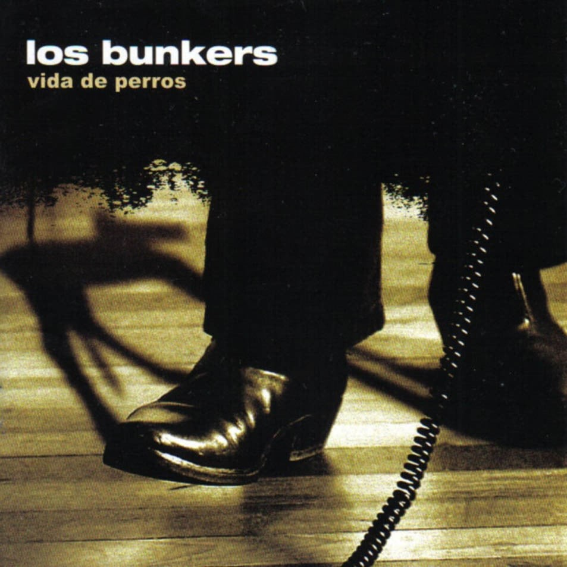

Los Bunkers es una banda de rock chilena con origen en Concepción, activa de 1999 a 2014, y del 2022 al presente, con una breve reunión en 2019. El grupo fue formado por los hermanos Francisco y Mauricio Durán, ambos en la guitarra, Álvaro y Gonzalo López, en la voz y el bajo, respectivamente, y el baterista Manuel Lagos, más tarde reemplazado por Mauricio Basualto.
 